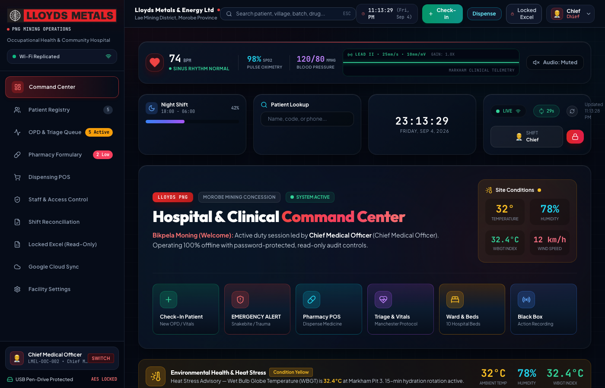
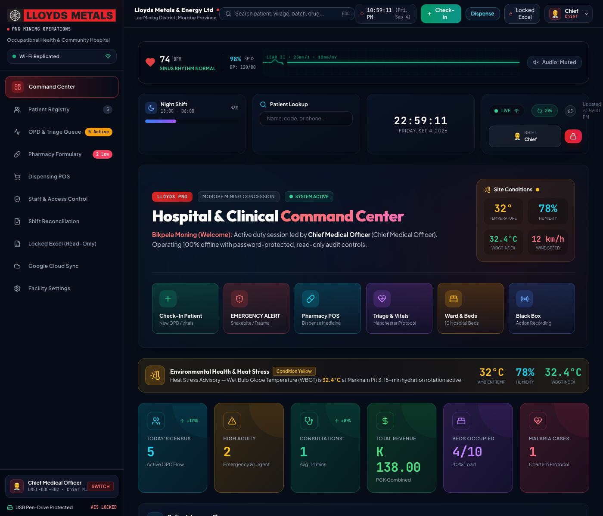
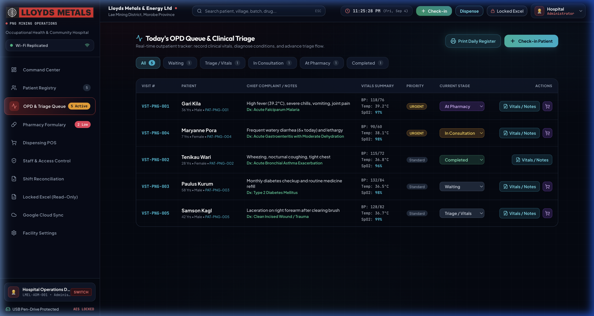
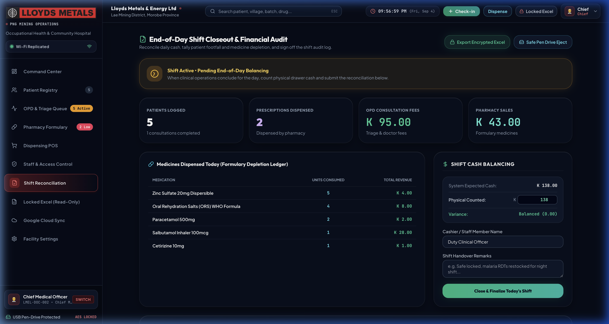
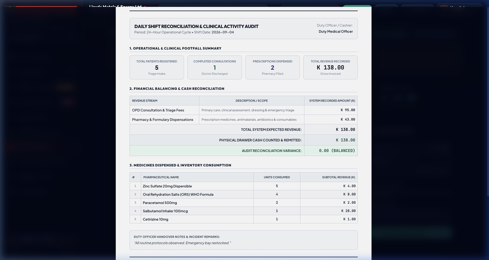
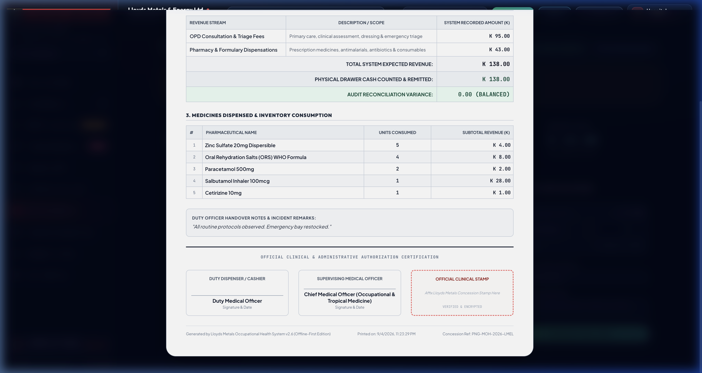
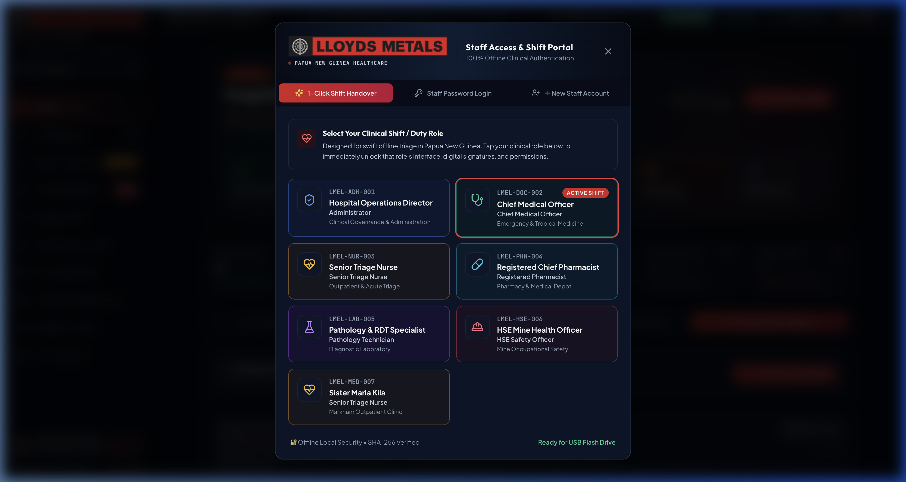

A 100% offline-first, portable clinical operating system designed for remote mining concessions, community health posts, and rural emergency stations. Includes live telemetry vitals, Manchester triage, POS pharmacy inventory, financial shift reconciliation, and tamper-proof Excel archives.
Remote mining concessions and extraction sites in Papua New Guinea operate under unique environmental and logistical constraints: erratic or non-existent internet connectivity, rugged field conditions, high turnover of community health workers with limited IT training, and significant operational risks regarding pharmaceutical inventory leakage and unrecorded cash transactions.
The Lloyds Medical Operating System (LMOS-PNG) addresses this challenge with a revolutionary "Zero-Cloud, 1-Click Plug-and-Play" architecture:
Runs directly off a USB pen drive or local clinic PC with zero external database server or internet required. Fast, durable, and resilient to sudden power outages.
Engineered with high-contrast HUD telemetry, CRT-style ECG waveforms, and large, color-coded visual buttons so local community health workers master the workflow in under 15 minutes.
Daily cash drawer balancing with variance calculation, triple sign-off authorization sheets, and AES-encrypted Excel exports with hidden Admin PIN protection.
The system is designed with a three-tier deployment model, allowing flexibility across single-laptop bush stations up to full mining base hospitals:
| Deployment Model | Hardware Requirement | Network Requirement | Best Suited For |
|---|---|---|---|
| 1. Portable Pen Drive (USB) | Any standard Windows or Mac PC | Zero (100% Offline) | Remote exploration camps, mobile drill-rig triage posts, and bush patrol clinics. |
| 2. Clinic Local Wi-Fi (LAN) | 1 host laptop + local Wi-Fi router | Local clinic Wi-Fi (No Internet needed) | Multi-room base hospitals where Triage Nurse, Doctor, and Pharmacist use separate tablets/PCs. |
| 3. Cloud VPS (Optional) | Dedicated Linux VM (AWS / Docker) | Broadband | Centralized head-office oversight across multiple concessions. |
server/data/hospital.db. When removing the drive, clicking "Safe Pen Drive Eject" automatically flushes SQLite WAL buffers and downloads an encrypted Excel snapshot.The primary landing screen functions as an institutional Medical Command Center. Designed with an obsidian dark theme, subtle 32px telemetry grid, and high-visibility digital readouts, it presents clinical status at a single glance:
Features CRT scanline overlay, phosphor persistence trails, 60-100 BPM heart rate calculation, and an optional audible systolic beep toggle for trauma resuscitation bays.
Displays Heart Rate, Blood Pressure (120/80 mmHg), SpO2 Oxygen Saturation, Body Temperature, and Respiration Rate with immediate color-coded alert badges (Normal / Warning / Critical).
Built-in 1-click clinical timers with pre-loaded treatment protocols for: Cerebral Malaria Coma, Death Adder Snakebite, Cardiac Arrest, Blast Trauma, and Severe Heat Dehydration.
Under-the-hood immutable telemetry logger that timestamps every triage admission, dispensation, dosage change, and cash entry for medico-legal protection.

The Outpatient Department (OPD) queue coordinates the entire patient journey from triage arrival through doctor consultation and pharmacy dispatch:

Instant registration assigns unique institutional codes (e.g. PAT-PNG-005) with blood group, known drug allergies (Penicillin, Sulphonamides), and emergency family contacts.
1-click creation of Patient ID Cards with scannable QR codes for repeat visits, eliminating paper file misplacement and speeding up intake in rural stations.
The Pharmacy module enforces strict inventory control calibrated to Papua New Guinea Essential Medicines:
At the conclusion of each 24-hour cycle or duty shift, staff execute the End-of-Day Balancing procedure. The system tallies total consultation fees, prescription sales, and compares system-expected revenue against the physically counted cash in the clinic safe:

All reports print with crisp institutional formatting designed to satisfy internal mine auditors and Papua New Guinea health authority inspectors:


This section details exact operating instructions so that any clinic officer or technician can launch, operate, and maintain the system with zero ambiguity.
Start_Hospital_Windows.batStart_Hospital_Mac.commandhttp://10.130.98.192:4000).| Account / Role | Username | Default Password | Access Privileges |
|---|---|---|---|
| Master Admin Console | admin |
lloyds2026 |
Full system control, staff management, password changes, and hospital settings. |
| Hidden Excel Admin PIN | (Unlock PIN) | lloyds2026 |
Reveals export password and allows generating encrypted Excel archives. |
| Supervising Medical Officer | doctor |
lloyds2026 |
Triage diagnosis, clinical prescribing, doctor notes, and shift sign-off. |
| Senior Triage Nurse | triage_officer |
lloyds2026 |
Patient check-in, vitals logging, emergency timers, and queue updates. |

1. Power on the primary clinic PC.
2. Launch Start_Hospital_Windows.bat.
3. Log into Command Center.
4. Verify Pharmacy low-stock alerts and temperature monitors.
1. Click "Quick Check-in" for new or returning worker.
2. Enter Vital Signs (BP, HR, SpO2, Temp).
3. Assign Manchester Priority (Immediate / Urgent / Standard).
4. Patient automatically advances to Doctor Queue.
1. Open OPD Queue and select patient.
2. Record clinical diagnosis and physician notes.
3. Click "Save & Send to Pharmacy".
4. Prescriptions flow seamlessly to the dispensary.
1. Select patient in Dispense POS.
2. Verify dosage and stock availability.
3. Collect consultation and medicine fee.
4. Print official medical invoice receipt (A4 or thermal).
1. Open "End-of-Day" tab.
2. Count physical cash in drawer and enter total.
3. Verify variance displays 0.00 BALANCED.
4. Enter handover notes and click "Close & Finalize Today's Shift".
5. Click "Print Shift Audit Report", sign and affix official concession stamp.
6. Click "Safe Pen Drive Eject" to safely sync and remove the drive.
| Specification Component | Implementation Detail |
|---|---|
| Primary Database | Embedded SQLite 3.x (ACID Compliant, WAL Journaling, zero background daemon). |
| Database File Location | server/data/hospital.db (Self-contained, portable, single-file archive). |
| Frontend Architecture | React 18 + Vite + Tailwind CSS + Canvas telemetry HUD monitors. |
| Backend Engine | Node.js Express microservice with local RESTful endpoints. |
| Cryptographic Security | Salted SHA-256 staff password hashing; AES-128/256 Excel spreadsheet encryption. |
| Print Standardization | High-fidelity CSS print engine conforming to ISO A4 (210 × 297 mm) and 80mm POS thermal roll. |
| Regulatory Registration | Registered Concession Clinic ID: PNG-MOH-LMEL-2026 (Papua New Guinea). |
LLOYDS METALS & ENERGY LIMITED — MINING & OCCUPATIONAL HEALTH DIVISION
Concession Operations Base • Papua New Guinea • Document Ref: LMEL-TECH-2026-V2.6